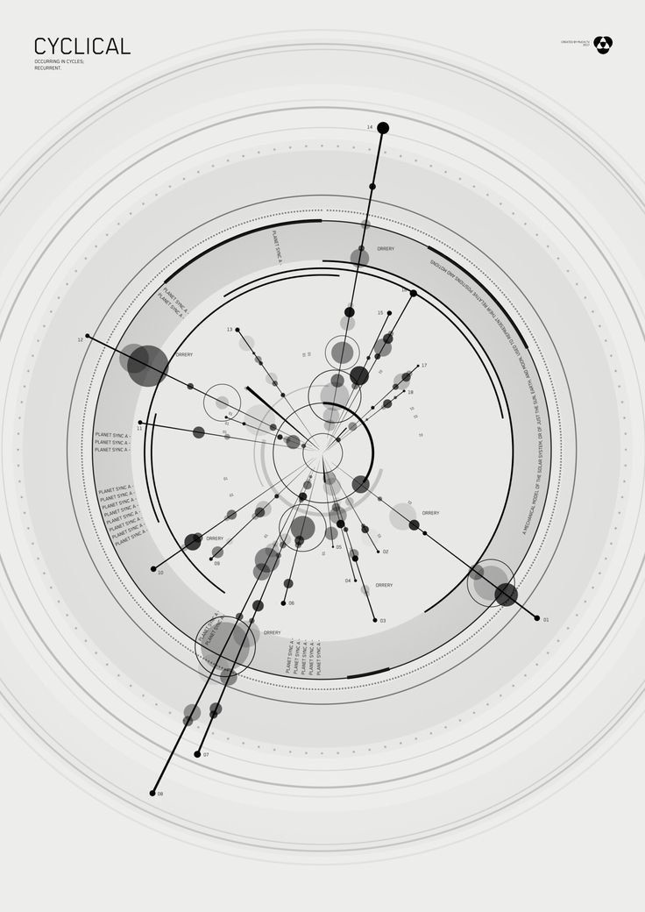

ORIGINAL REFERENCE
AN ORBITAL STUDY 18 AXES / INFINITE RECURRENCE
STAFF / VITAL ARCS
ONE ARC. ONE HIT POINT.
WHITE
BLACK
PRESET
STAFF / PROFILE
VITALS · CHARGES · ENERGY
PRESET

AN ORBITAL STUDY 18 AXES / INFINITE RECURRENCE
ONE ARC. ONE HIT POINT.
VITALS · CHARGES · ENERGY